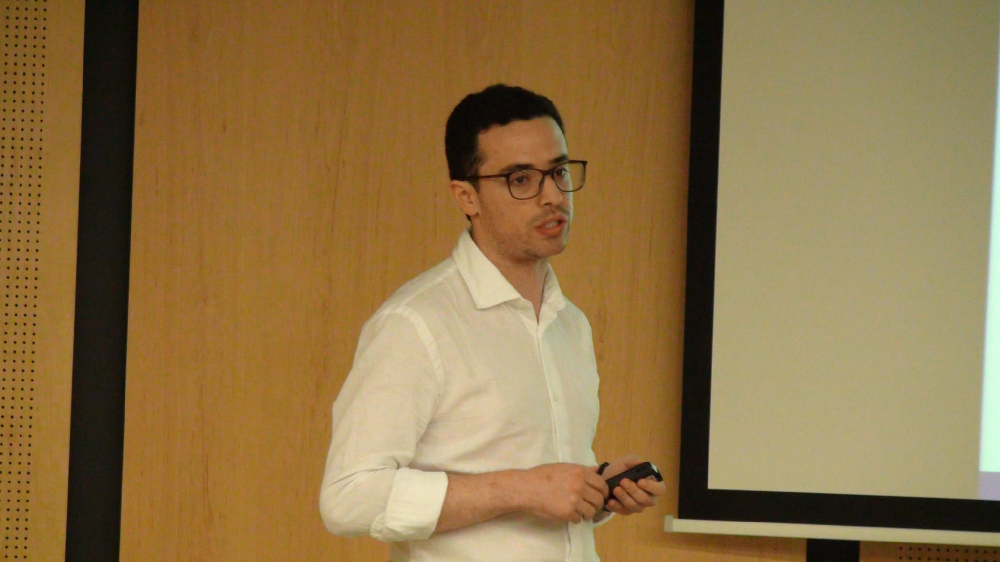

Regulation and Sectoral Analysis (Research Assistant and Consultancy)
- October [2014]: The impact of ICT on the informal economy. International Telecommunication Society. ITS. Rio de Janeiro, Brazil. Jointly with Martha García. Link
- October [2014]: The New business density and its determinants. Euro-Asia Business and Economics Society conference. Barcelona. Spain. Joint with Jacobo Campo Robledo.
- June [2013]: Theory of Broadband, Regulation, Networks and applications. Expert Workshop: Columbia Institute for tele-information. Columbia University. New York City. The United States. Jointly with Martha García Link
- May [2013]: Impacto de las TIC en el nivel de innovación de América Latina y el Caribe. Americas Communication Research Network (ACORN). Telecom- CIDE. México. DF. Jointly with Martha García
- July [2012]: Where Should Government Invest? The Impact of ICT on Gross Capital Formation of New Firms. 23rd European Regional Conference of Telecommunication Org: International Telecommunication Society. (ITS). Vienna, Austria. Jointly with Martha García
- May [2012]: Where Should Government Invest? The Impact of ICT on Gross Capital Formation of New Firms. ICTs and its Social and Economic Impact in the Americas”. Org: Americas Communication Research Network (ACORN) Valparaiso, Chile. Jointly with Martha García.
- May [2011]: Impacto de las TIC en el emprendimiento empresarial: Estimaciones econométricas a nivel de un panel de Países. ICTs and its Social and Economic Impact in the Americas”. Org: Americas Communication Research Network (ACORN) Lima, Peru.
- August [2010]: Determinantes de la Inversión en TIC para el sector Industrial Colombiano. Org: Americas Communication Research Network (ACORN). México, D. F. (México).